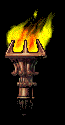
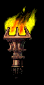

Avenged Sevenfold (frecuentemente abreviado como A7X)
es una banda estadounidense de heavy metal originaria
de Huntington Beach, California, fundada en 1999. Avenged Sevenfold
comenzó como una banda de género metalcore con su álbum debut Sounding
the Seventh Trumpet de 2001 y más tarde con su segundo álbum Waking The
Fallen de 2003, en el que The Rev y M. Shadows utilizaron el estilo vocal
screaming en muchas canciones de este álbum. La banda es principalmente
conocida por la versatilidad de sus estilos musicales, sus dramáticas portadas
en cada uno de sus álbumes y su logotipo: Deathbat.
 
